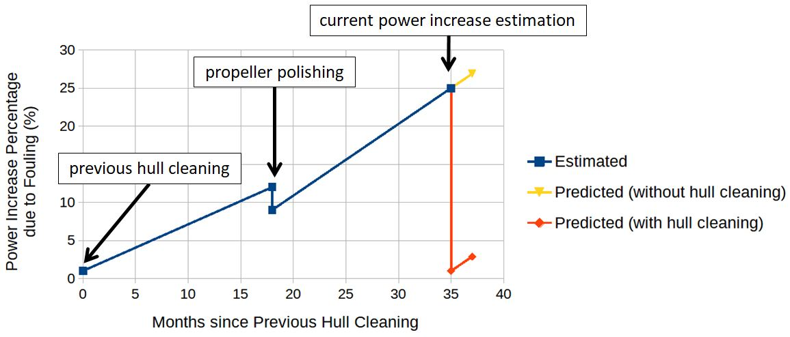

Effective Ship Performance Monitoring Based Only on Observed Hull Condition
This simple methodology allows the monitoring of the performance of your vessel relying only on the observed condition of the hull. The provided KPIs can be estimated after underwater inspections, giving a clearer picture of the performance of the vessel in time.
"Why is this book useful?"
The existing guidelines regarding the management of biofouling, lack the overall connection between the visual inspection (e.g. underwater inspection), the performance prediction (e.g. estimation of added Power/Fuel Consumption) and the relevant action (e.g. hull cleaning). MEPC's "Guidelines for the control and management of ship's biofouling to minimize the transfer of invasive aquatic species" offers a simple methodology that links the visual aspect with the required action based on a fouling rating, but doesn't offer much guidelines regarding the expected performance prediction based on the observed biofouling. On the other hand, ISO 19030 focuses on the analysis of high-frequency data in order to estimate the performance of the vessel but doesn’t offer much guidelines on how this performance prediction is connected to the observed fouling. The methodology presented in the book attempts to bridge the gap between these two approaches. It doesn't provide the accuracy of the ISO standard, but it will always provide reliable rough estimations of the performance of a ship within seconds, by utilizing only underwater photos (no other information/data/logs required).

Testimonials
After reading this book you will be able to:
Identify the 5 main categories of fouling
Estimate the expected power increase due to observed fouling
Estimate the expected additional fuel consumption due to fouling
Predict the expected effect of fouling after X months
Decide whether to proceed with hull cleaning
Applicable to most of ship types and sizes:
Tankers (2,000 to 330,000 t DWT)
Bulk Carriers (1,000 to 330,000 t DWT)
General Cargo Ships (2,000 to 45,000 t DWT)
OBO Carriers (60,000 to 160,000 t DWT)
Containerships (400 to 12,000 TEU)
LNG Carriers (125,000 to 260,000 m3 Capacity)
RORO Ships (500 to 5,000 Lanemeters)
RORO/Passenger Ships (70 to 200 m Length)
Chemical Carriers (5,000 to 50,000 t DWT)
Reefer Ships (2,500 to 18,000 m3 Capacity)
Here is what you get:
The Offer

Hardcopy of the book "Ship Performance Assessment Based on Observed Fouling" (97€ Value)
The "1-MINUTE HULL FOULING ASSESSMENT SPREADSHEET” (100€ Value)
A TOTAL VALUE OF 197€
Note: Above link is for purchasing the book. After purchasing the book, the "1-MINUTE HULL FOULING ASSESSMENT SPREADSHEET" can be downloaded from sealionengineering.com